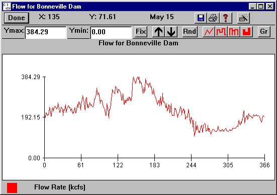

Julian Day Output windows allow visualization of data calculated by COMPASS. The viewing features are the same as the Editable Graph; however, the Julian Day Output window has no input features. Open Julian Day Output windows by making a selection from a menu. Depending on the settings in the Mouse Tool, Julian Day Output windows can be opened from the River Map by clicking on a dam or reach. COMPASS includes the following dam and reach specific Julian Day Output windows:

Julian Day Output window